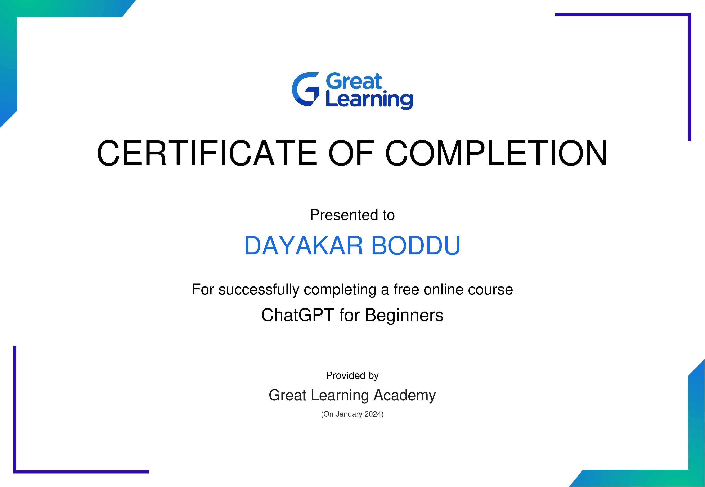
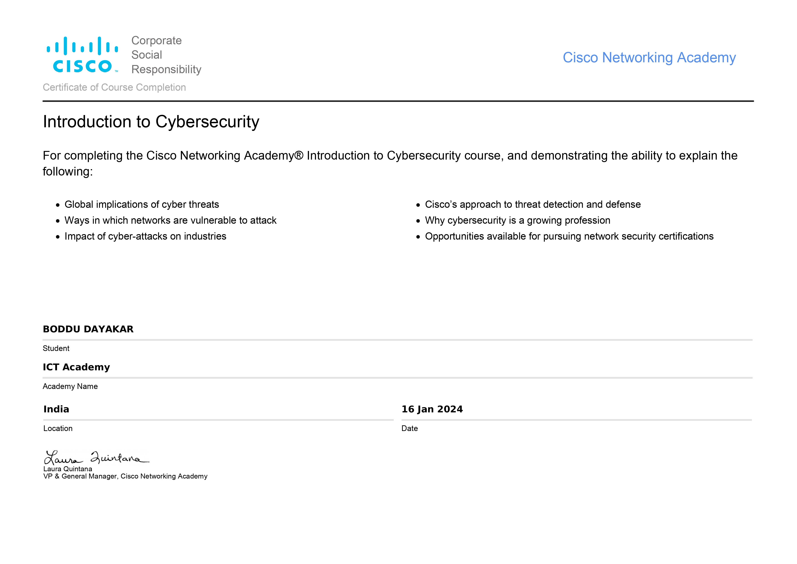
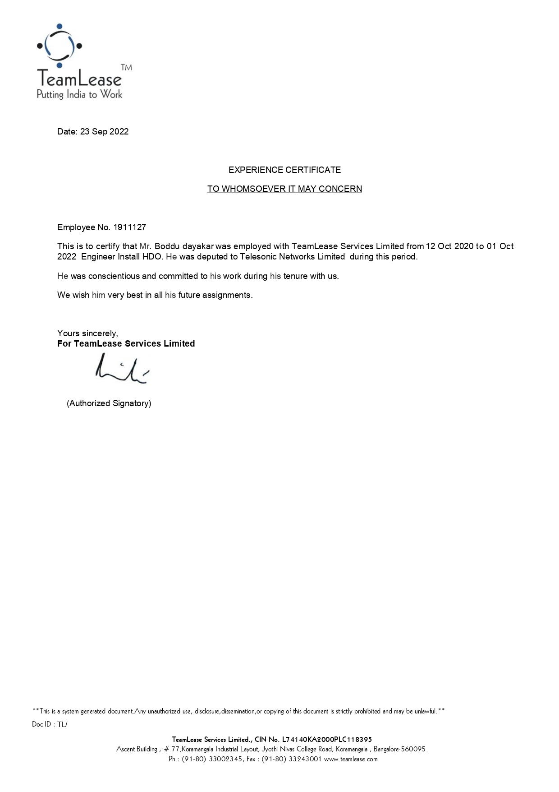
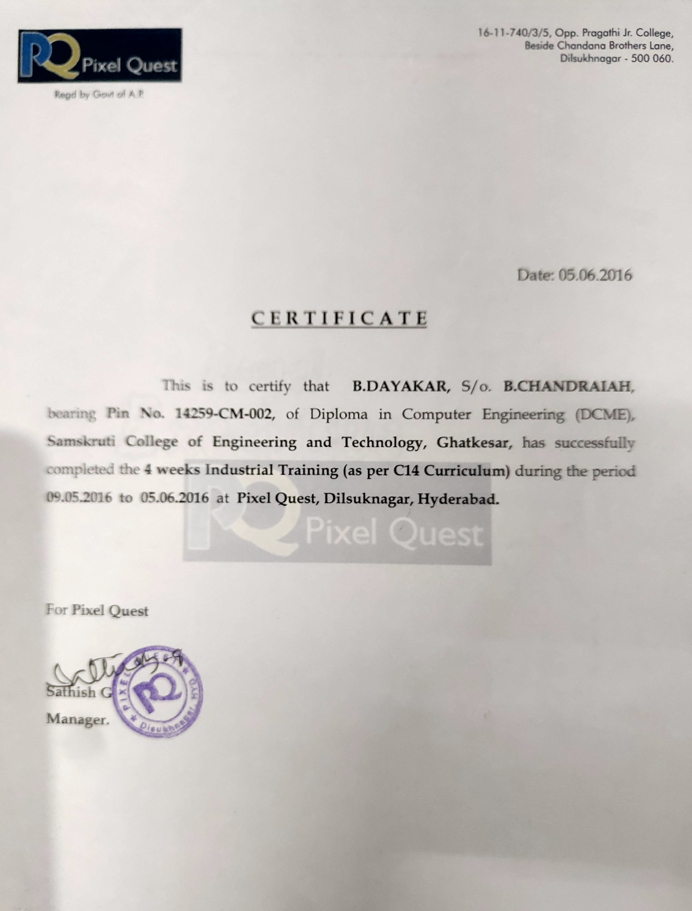

About Me
I am a Computer Science and Engineering undergraduate.I am now in my final year, specializing in computer Science and Engineering
.My proficiency extends to various programming languages, including C, C++, HTML, CSS, Java, and Python.
Currently
seeking exciting opportunities to apply my programming skills..
Skills & Expertise:
- HTML
- CSS
- JavaScript
- React.Js
- FullStackJava
- Python
- Computer Networking(CCNA)
- Cyber Security
Experience:
I Have over 2 years and 1 month of hands-on experience as a Network Field Engineer at Telesonic Networks. In this role, I have been actively involved in the installation of WiFi routers, meshes, and various networking devices. My responsibilities extend
to the configuration of routers, user activations, and the overall maintenance of networks. I specialize in troubleshooting a range of network-related issues, including but not limited to packet loss, connectivity issues, hardware and software
glitches, as well as voice (VoIP) concerns and bandwidth-related issues. My expertise also covers optical fiber splicing, handling twisted pair cables, connecterization, and crimping of RJ45 and RJ11 connectors. Additionally, I excel in customer
relationship management, ensuring seamless interactions with customers and delivering faultless services. I am well-versed in FTTH/FTTX technologies and proficient in working with and analyzing the functionalities of various ONTs, including
Sercum, Huawei, Nokia, ZTE, etc. Furthermore, I am experienced in fiber routing and dressing. My role also involves effective communication with the backend support team, including the timely raising of tickets. As a team player, I have successfully
managed teams to ensure the smooth execution of projects and tasks.
Projects:
Human Action Recognition Using Deep learning


The human action recognition project using deep learning aims to develop a system capable of automatically identifying and classifying human actions within video sequences. Leveraging deep learning techniques, specifically deep neural networks,
this project involves the creation of a model that can learn intricate patterns and temporal dependencies present in video data.
Certifications:



